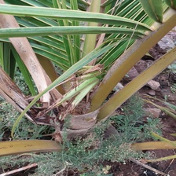
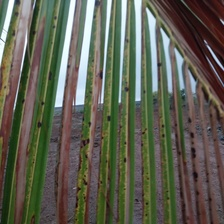
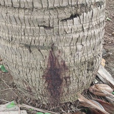

Model Selection & Specifications
Select one of the trained hybrid architectures to load into the client-side execution session.
Model Architecture
MobileViTv3 (Hybrid)
Parameter Count
2.30 M
FLOPs (Inference Complexity)
0.18 GFLOPs
Validation F1-Score (Macro)
98.70%
ONNX File Size
8.40 MB
Image Input Source
Select or drag & drop leaf image for inference
Supported formats: PNG, JPG, JPEG (auto-cropped to square input resolution)
Camera stream inactive
Standardized evaluation samples validated by botanical experts:

Bud Rot

Gray Leaf Spot
Leaf Rot

Stem Bleeding
Visual Inspection Area
No image loaded. Upload an image, use the camera, or select an evaluation sample to run model evaluation.
Quantitative Predictions
Ready. Please provide an input image.